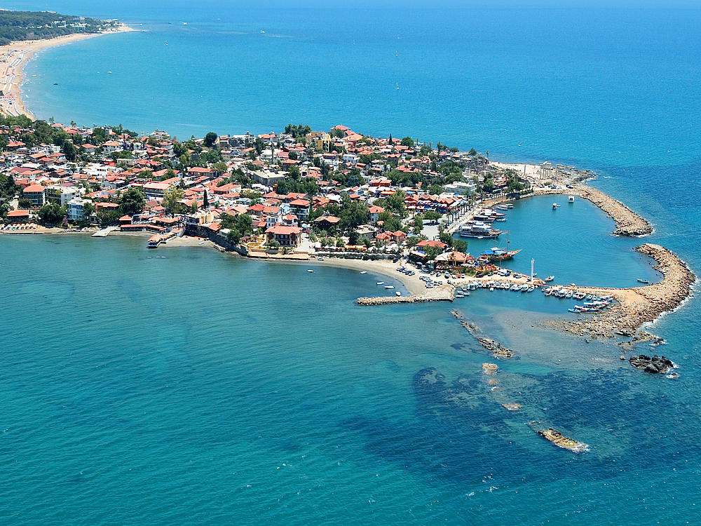
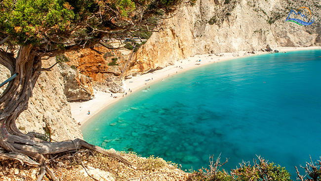

Turcia este una dintre cele mai frumoase țări din lume, un ținut de poveste ce îmbină armonios plajele la Mediterana cu orașele antice de o frumusețe aparte. Side este un oraș-stațiune localizat pe Coasta de Sud a Mediteranei, în Turcia, fiind de fapt vezi mai mult..

↑